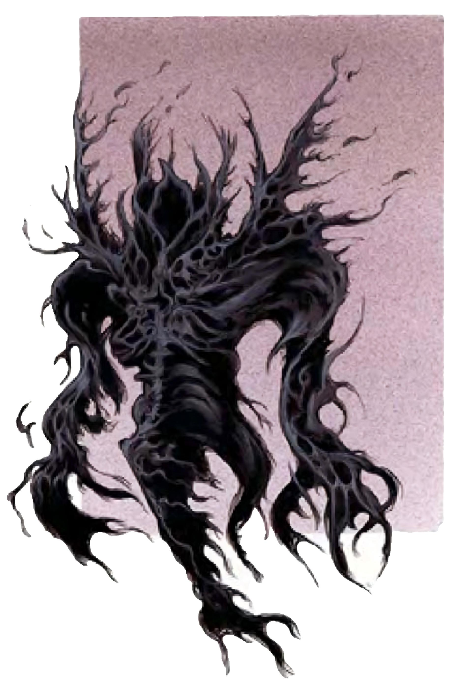

飘浮在你面前的生物仿佛是从恶梦中被释放出来。他有着模糊的人形，但毫无特征，只有因愤怒与疯狂造成的扭曲。腰部以下的形体逐渐淡化消失，移动时身后留下一缕烟雾般的微痕。
怨魂是生前被疯狂驱使而自杀的幽灵遗骸。怨魂渴望复仇，不断纠缠生前折磨他们的人，将其逼上绝路。怨魂无法进行有意义的交谈。
| 资料栏位 | 怨魂 (Allip) 中型不死生物 (虚体) |
|---|---|
| 生命骰 | 4d12 (26HP) |
| 先攻 | +5 |
| 速度 | 飞行30英尺 (灵活) (6格) |
| 防御等级 | 15 (+1敏捷、+4偏斜)、接触15、措手不及14 |
| 基本攻击/擒抱 | +2 / ― |
| 攻击 | 虚体接触+3近战 (1d4吸取感知) |
| 全力攻击 | 虚体接触+3近战 (1d4吸取感知) |
| 占用/触及 | 5英尺/5英尺 |
| 特殊攻击 | 低喃、疯狂、吸取感知 |
| 特殊能力 | 黑暗视觉60英尺、虚体特性、+2驱散抗力、不死特性 |
| 豁免 | 强韧+1、反射+4、意志+4 |
| 属性 | 力量―、敏捷12、体质―、智力11、感知11、魅力18 |
| 技能 | 躲藏+8、威吓+7、聆听+7、搜索+4、侦察+7、生存+0 (追踪+2) |
| 专长 | 精通先攻、快速反射 |
| 环境 | 任何 |
| 组织 | 单独 |
| 挑战级数 | 3 |
| 宝藏 | 无 |
| 阵营 | 总是中立邪恶 |
| 进化 | 5-11HD (中型) |
| 等级修正值 | ― |
怨魂无法造成实体伤害，然而却不自觉。怨魂会持续攻击对手，但对手毫发无伤。
低喃（超自然）：怨魂不断对自己低吟哀泣，形成催眠效果。离怨魂60英尺内所有神智清醒的生物必须通过意志检定（DC=16），否则接下来2d4轮内如同遭法术“催眠术”影响。低喃属于音波、影响心灵的胁迫效果。通过意志检定的生物24小时内不受同一怨魂低喃的影响。豁免DC的调整值与魅力调整值相同。
疯狂（超自然）：对怨魂使用思想侦测、心灵控制或精神感应等直接与其受虐灵魂接触的能力时，将受1d4点感知伤害。
吸取感知（超自然）：怨魂每次以虚体接触成功攻击对手时，可造成1d4点吸取感知，同时，怨魂也增加5点暂时生命值。